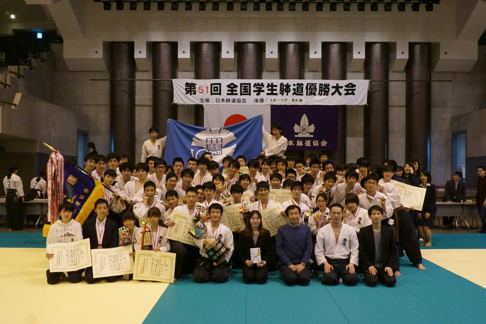
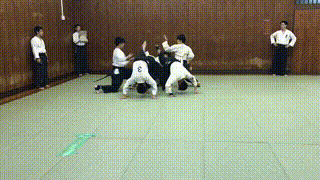
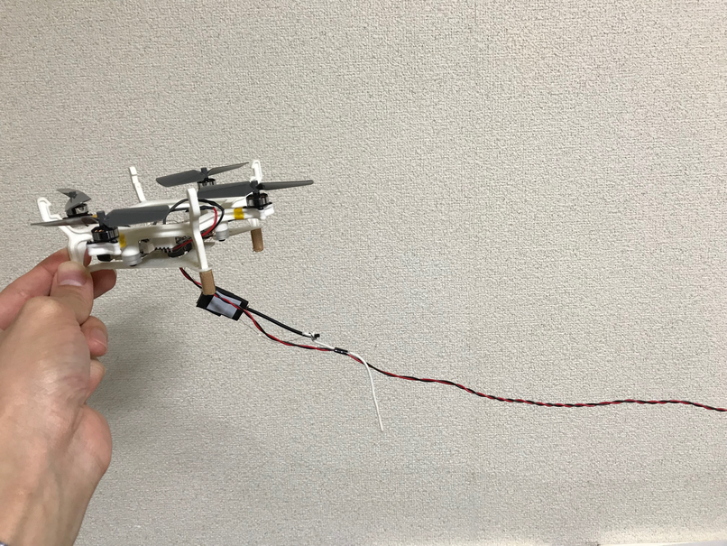
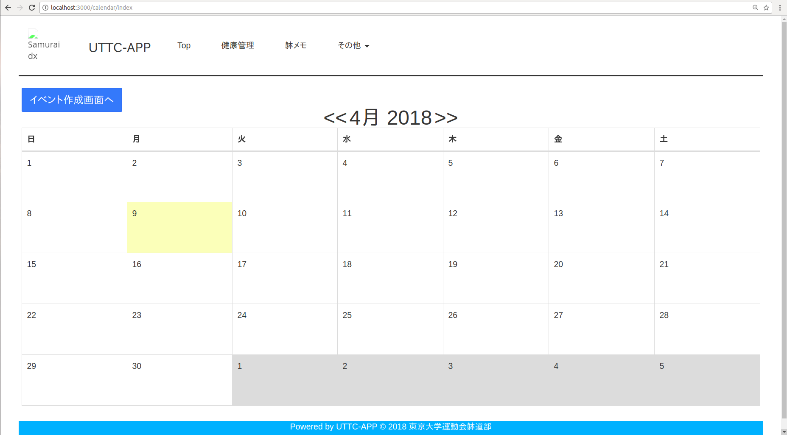
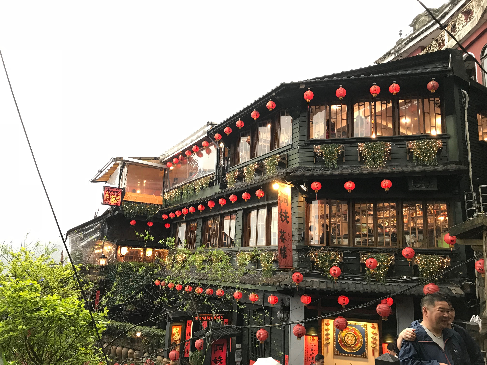

Self Introduction & About My Recent Activities
Department of Aeronautics and Astronautics. The University of Tokyo.
Artificial Intelligence Laboratry Master course 1st grade.
Hidehisa Arai
Self-Introduction
- Name: 荒居 秀尚(Arai Hidehisa).
- Birthday: Dec 13th, 1994 (23 years old).
- Birthplace: Setagaya-ku, Tokyo.
- Graduated: Sugamo High School, The University of Tokyo.
- Hobby: 躰道(Taido), Programming(I hope).
- Skill: Acrobat.
What's Taido?
Taido is ...
- A kind of marshal arts derived from Karate.
- Use the dynamic movement of whole body.
About UTTC
- The University of Tokyo Taido Club.
- Founded in 2001.
- About 70 people enrolled.
- 10 times overall victory successively at the student convention.
- Won the President's Award twice
What we did last year
Joined a World Competition.
Practiced 5-7 days/week like...

About My Bachelor Thesis
Theme: 「テザー付きUAVの安定性解析と制御に関する研究」
Background
Tethered Drone has several merits...
- Can supply power with tether.
- Use tether to communicate & data transfer.
- Can easily estimate self position only by inertial sensor.
Background
...and disadvantages.
- Limmited mobility.
- Difficulty in controll because of the nonlinear dynamics.
What I did
- Indicated that linear controller cannot always controll the system.
- Showed that linear controller has instability potentially.
Recent Activities
- (Still) Working on making Web Application.
- Went to Taiwan.
- Attended President's Award ceremony.
- Studying.
Web App Making.
Application for the Taido Club
Ruby on Rails + MySQL + jQuery
Trip @ Taiwan
Foods
Foods?
故宮博物院
九份
Attended President's Award ceremony
The Taido Club had won the President's Award for the 2nd time in 2017.